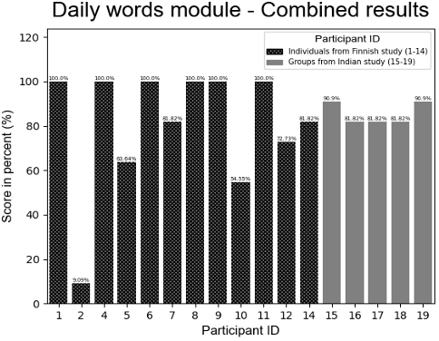
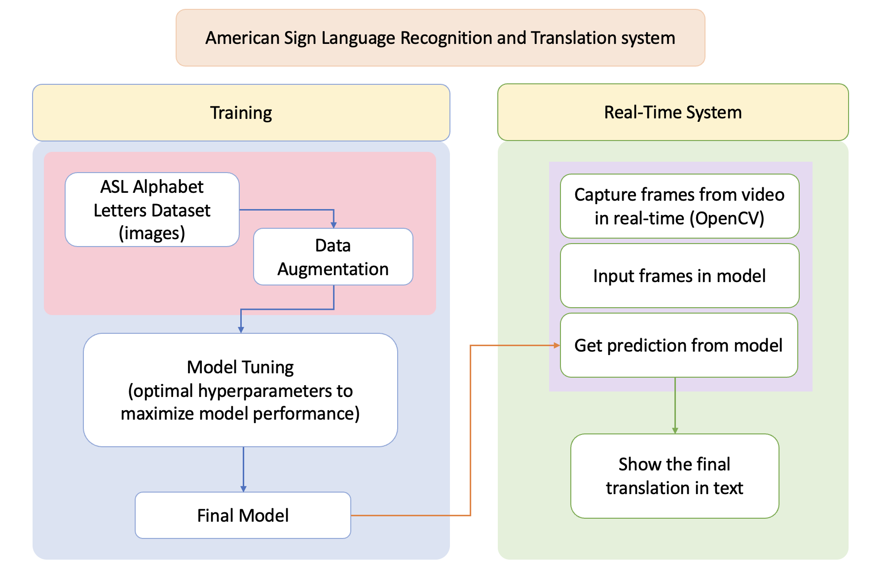
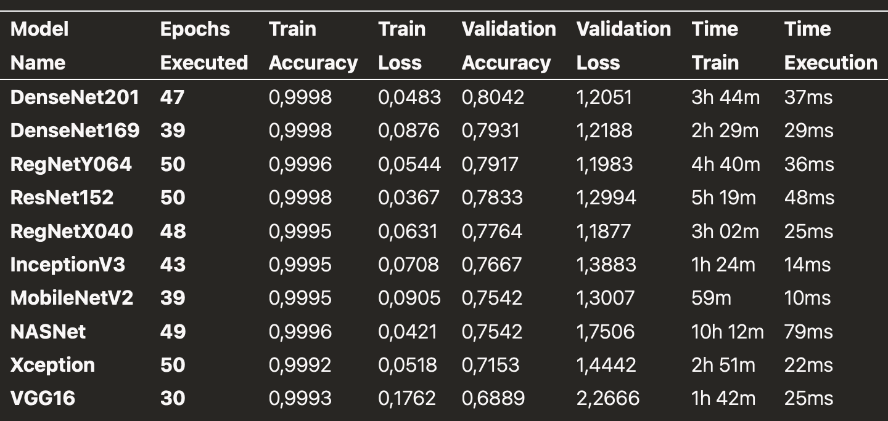

Research Methods
This tutorial builds upon two complementary research directions: (1) pedagogical experimentation in classroom contexts for children learning sign language, and (2) computer vision model design for real-time sign recognition.
“We used a mixed-methods approach, combining quantitative metrics of performance with qualitative feedback from teachers and students.” — Rahman et al., 2024
1. Research Design Overview
The research combines user-centered design and experimental computer vision modeling. Each complements the other: Rahman et al. evaluated how children interacted with digital learning tools across cultural contexts, while Cabana focused on optimizing AI models for sign recognition and feedback systems.
2. Child-Centered Pedagogical Study
Conducted by Rahman et al. (2024), this phase observed how children aged 6-7 engaged with an interactive sign-learning application. The study spanned two countries—India and Finland—to explore how cultural and instructional contexts shape learning outcomes.

“The Finnish children preferred collaborative group work, while Indian participants engaged longer with guided modules.” — Rahman et al., Design Findings
| Parameter | Finland | India |
|---|---|---|
| Participants | 14 (ages 6-7) | 14 (ages 6-7) |
| Preferred Modality | Auditory + Group | Visual + Teacher-guided |
| Re-attempt Rate | High (avg. 3.1 attempts) | Moderate (avg. 2.0 attempts) |
| Instructor Involvement | Minimal | Moderate to High |
The mixed-methods design combined quantitative logs (accuracy, attempts, time-on-task) with qualitative classroom notes. Analysis emphasized engagement patterns and preferred learning modalities.
3. Computer Vision System Development
The second stream, described in Cabana (2024), addressed model training for real-time sign recognition. The study used an image dataset of ASL alphabet gestures (excluding J and Z) to evaluate multiple convolutional architectures.

“We benchmarked six CNN families and selected the one providing the best trade-off between accuracy and computational cost.” — Cabana, 2024
| Model Family | Avg. Accuracy (%) | Latency (ms/frame) | Notes |
|---|---|---|---|
| VGG16 | 91.8 | 38 | High accuracy; large size |
| ResNet50 | 93.2 | 42 | Best balance for inference speed |
| InceptionV3 | 89.7 | 35 | Fast, but lower accuracy |
| MobileNet | 90.4 | 21 | Lightweight, best for edge devices |
Each model was trained on augmented datasets to ensure robustness to lighting and skin tone variation. Evaluation used standard classification metrics and confusion matrices.

4. Integrated Research Methodology
The final phase integrates both studies: the child engagement results inform the design of the CV learning interface. The goal is to create adaptive feedback systems grounded in real behavioral data.